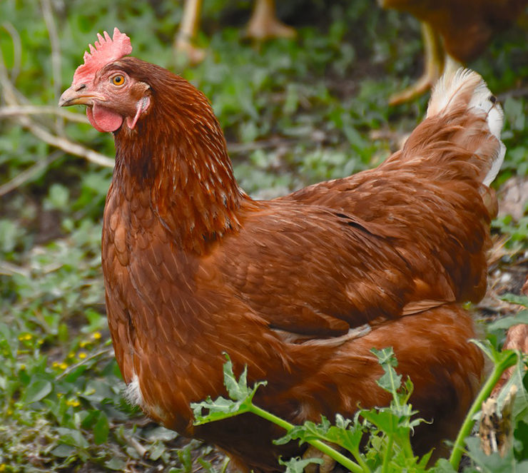

Gallina
El gallo y la gallina (Gallus gallus domesticus) son la subespecie doméstica de la especie Gallus gallus, una especie de ave galliforme de la familia Phasianidae procedente del sudeste asiático. Los nombres comunes son: gallo, para el macho; gallina, para la hembra, y pollo, para los subadultos. Es el ave más numerosa del planeta, pues se calcula que el número de ejemplares supera los dieciséis mil millones.
Los gallos y gallinas se crían principalmente por su carne y por sus huevos. También se aprovechan sus plumas y algunas variedades se crían y entrenan para su uso en peleas de gallos y como aves ornamentales.
Es un ave omnívora. Su esperanza de vida se encuentra entre los cinco y los diez años, según la raza.
Indice
Descripccion
Poseen dos tipos de protuberancias carunculares en la cabeza: una cresta en el píleo y unos lóbulos que cuelgan a ambos lados del pico. El dorso lo cubre una capa de plumas doradas desde el cuello hasta la espalda.
Los gallos y las gallinas muestran un evidente dimorfismo sexual, y pueden distinguirse ambos a simple vista. Los machos son más grandes, miden aproximadamente 50 cm de altura y llegan a pesar hasta 4 kg. Poseen una gran cresta rojiza en la cabeza, la cual se interpreta como símbolo de dominancia. La cola está compuesta por plumas oscuras grandes y arqueadas que brillan de color azul, púrpura o verde bajo la luz. A ambos lados de su cabeza aparecen dos manchas blancas, que lo distinguen de otras especies cercanas, además de las patas grisáceas. En algunas razas las patas están provistas también de espolones.
Las gallinas son más pequeñas. No suelen medir más de 40 cm de altura y apenas llegan a 2 kg de peso. Poseen una coloración notablemente menos llamativa. Sus apéndices carnosos de la cabeza son también mucho menos prominentes.
En la estación de muda (de junio a octubre), los machos adquieren un plumaje compuesto por plumas largas y negras hacia la mitad del dorso, y el resto del cuerpo está cubierto de plumas anaranjadas. En las hembras no es apreciable ningún cambio, aunque igualmente mudan de plumas.
Existen estudios recientes que ponen de manifiesto genes latentes en el gallo doméstico para la producción de dientes en las mandíbulas.[cita requerida] También por el mismo motivo se descubrió que algunos pollos antes de nacer tienen una cola más larga, que luego se acorta al poco tiempo de nacer.
Comportamiento
Son aves naturalmente gregarias, que han perdido gran parte de la facultad del vuelo debido a la selección artificial del ser humano. El gallo rojo salvaje vuela bien, hacia un lugar más elevado, para ponerse a salvo o para huir de posibles depredadores, aunque también se le puede ver volando a ramas altas de árboles para descansar. Si bien los ejemplares domésticos casi nunca hacen uso de su facultad de vuelo, las gallinas domésticas criadas en semi-libertad vuelan a sitios elevados para pasar la noche. Los gallos domésticos pueden llegar a ser territoriales y violentos en algunas razas, aunque usualmente son buenos animales de compañía, fáciles de domesticar mediante alimentación a mano.
Poseen un sistema social característico con un orden jerárquico que comienza a desarrollarse a la semana de vida, y que a las siete semanas ya está completamente establecido. Hay un macho dominante, que domina sobre todos los demás, y un macho sometido a todos. Las gallinas tienen un orden jerárquico independiente y no entran en la dominancia de los machos.
La acción física de dominancia consiste en la elevación de la cola y la cabeza. La sumisión se muestra de forma opuesta, bajando la cabeza y la cola, agachándose e inclinando la cabeza hacia un lado. Las gallinas se sienten a salvo bajo la dominancia de un gallo, y solo se defenderán por la fuerza si se encuentran alejadas del gallo dominante. Si muere el gallo dominante, el siguiente en el orden jerárquico toma el cargo inmediatamente.
Las gallinas, como muchas aves, tienden a atacar a otras gallinas que muestren síntomas de enfermedad. Si ven el color rojo debido a una lastimadura en otra gallina, las demás no dejan de picotearla, y le causan graves daños.
Alimentacion
Es omnívoro e insectívoro. No puede distinguir el sabor dulce, y a la mayoría no les gusta el sabor salado.
Canto
El gallo produce un sonido llamado canto (descrito mediante la onomatopeya "quiquiriquí" o "kikiriki"), siempre que no esté castrado (pollo capón). El gallo canta durante todo el día, si bien concentra sus cantos en ciertos períodos del día, como son el amanecer, para lo que está programado genéticamente, el mediodía, la media tarde y a mitad de la noche, entre las tres y las cinco de la mañana. Estos cantos y los esporádicos que se suelen dar a lo largo del día, fuera de los períodos descritos, sirven como desafío territorial a otros gallos, para atraer a las hembras cercanas y como señal de aviso en general. También puede deberse a algún disturbio a su alrededor. Normalmente es un sonido más de tipo violento o alerta.
El gallo emite además otros sonidos, esta vez ya parecidos a los que emite la hembra de su especie, llamado cacareo, y la onomatopeya usada para describirlos es "clo-clo" o "cocó". Este sonido lo emite sobre todo cuando se propone fecundar a alguna hembra, o cuando ha encontrado comida, para llamar al resto de su familia. Este sonido es más de tipo tranquilo y familiar.
Es importante destacar que este comportamiento es mucho más usual en aves rurales, es decir, libres, si bien el canto lo emiten siempre.
Reproducción
La estación de reproducción comienza en primavera y se prolonga hasta el verano, con la intención de que los pollos nazcan bajo el calor veraniego.
Incubacion y eclosion
Las gallinas ponen cada día durante varios días (entre 8 y 10) un huevo, en el que se desarrolla el embrión, y lo incubarán hasta que nazca, le darán calor y rotarán su posición durante veintiún días. Se conoce como gallina clueca a aquella que deja de poner huevos y se centra en empollarlos y protegerlos
El embrión se nutre de la yema, que penetra en su interior por medio del ombligo. Al término del primer día el sistema circulatorio ya será operativo dentro del huevo, y la cabeza comenzará a tomar forma. Al quinto día se forman los órganos sexuales, al decimotercero se comienza a calcificar el esqueleto usando el calcio de la cáscara del huevo, y a los veintiún días el pollo está completamente desarrollado para comenzar a romper el cascarón, lo cual les puede llevar de diez a veinte horas. La gallina cacareará al oír piar a los polluelos, para motivarles a salir del cascarón.
Como no todos los huevos eclosionan al mismo tiempo, la madre continúa incubando durante dos días desde el nacimiento del primero de los polluelos, los cuales agotan los nutrientes de la yema que han absorbido antes de nacer. Entre las dos y cuatro semanas después de nacer los pollos ya tienen plumas, y a las ocho semanas ya tienen el plumaje del adulto. A las ocho o diez semanas son expulsados del grupo por sus madres para que formen el suyo propio o se unan a otro. A los cinco meses de edad alcanzan la madurez sexual, y suelen ser los machos quienes antes la alcanzan.
Incubacion artificial
Los huevos de gallina pueden incubarse de manera artificial con resultados satisfactorios. Prácticamente todos los pollos saldrán del cascarón en aproximadamente veintiún días en condiciones apropiadas de temperatura (37 °C) y humedad relativa (55%; se eleva hasta el 70% en los tres últimos días, a fin de ablandar la cáscara).
Muchas incubadoras artificiales de tamaño industrial pueden incubar miles de huevos al mismo tiempo, incluyendo rotaciones totalmente automatizadas para los huevos.
Arte y cultura
Esopo escribió una fábula titulada La gallina de los huevos de oro, acerca de una gallina que ponía un huevo de oro diario; su propietario, como era tan ambicioso, la mató pensando que iba a ser millonario al instante, porque dentro iba a encontrar un tesoro, pero descubrió que era igual que todas las demás gallinas y por consecuencia perdió el fruto abundante que le daba la gallina.
Debido al proverbial comportamiento huidizo de estas aves, en muchas partes es muy común utilizar la palabra "gallina" como adjetivo para designar a una persona miedosa.